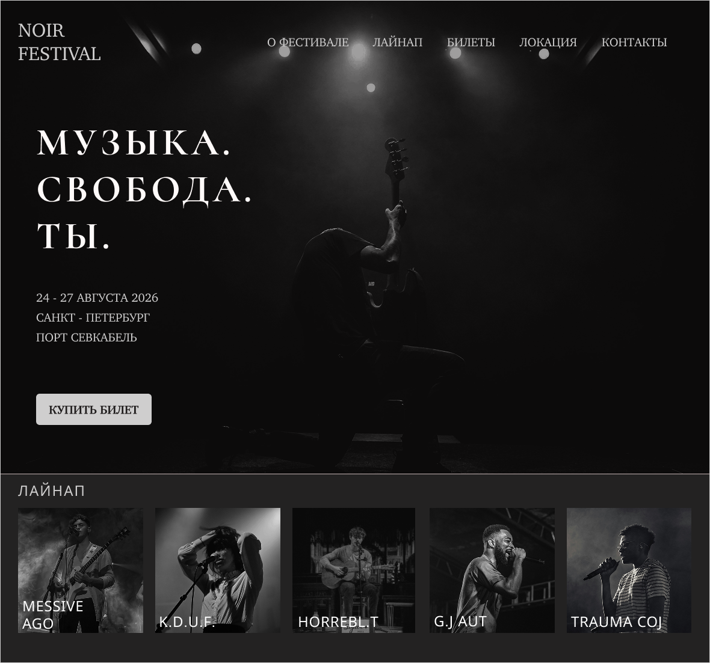

NOIRFESTIVAL
GRUNGE · LANDING PAGE
МУЗЫКА.
СВОБОДА.
ТЫ.
24–27 АВГУСТА 2026
САНКТ-ПЕТЕРБУРГ
ПОРТ СЕВКАБЕЛЬ
КУПИТЬ БИЛЕТСАНКТ-ПЕТЕРБУРГ
ПОРТ СЕВКАБЕЛЬ

ЛАЙНАП
MESSIVE
AGO
AGO
K.D.U.F.
HORREBL.T
G.J/AUT
TRAUMA COJ
ЦЕЛЬ ПРОЕКТА
Создать атмосферный лендинг музыкального фестиваля и вести пользователя к покупке билета.
ВИЗУАЛЬНЫЙ ПОДХОД
Высокий контраст, зерно, тёмная фотография, editorial-типографика и акцент на CTA.
DESKTOP
Полноэкранный hero и композиция, рассчитанная на широкие экраны.
MOBILE
Отдельная мобильная версия с собственной композицией, а не просто уменьшенный desktop.